Generation 4 is the Fourth series of games to release in the Pokemon Franchise. Generation 4 much like Generation 3 includes remakes of a previous Generation this time in Pokemon HeartGold and Pokemon SoulSilver being remakes of Generation 2. Meaning that Generation 4 consists of five games in Pokemon Pearl, Pokemon Silver, Pokemon Platinum and the Gen 2 remakes. Very similarily to Generation 2 being a direct sequel of Generation 1, Generation 4 is a direct sequel to Generation 3 with the regis being available to catch in these games and confirmation from nintendo proving this to be true. Generation 4 released in mid-late 2006 in Japan and in early 2007 Internationally. Pokemon Platinum would release with an entire new plot line in late 2008 in Japan and was the first game to release in Europe hitting shelves in North America in early 2009, Australia in mid 2009 and 12 days after the Australian release it would hit European shelves on the 22nd of May 2009. Taiwan was also a first for the pokemon series releasing in Taiwan in September of 2008, all of these releases were for the Nintendo DS. Team galactic led by Cyrus is the main evil team in the core Generation 4 games with Team Rocket being the main evil team of SoulSilver and HeartGold. The male playable characters of the core games is Lucas with Ethan making a return for the remakes and the main playable female characters for the core games is Dawn with Lyra being made for the remakes. The starter pokemon of Generation 4 are Squirtle the water type, Chimchar the fire type and Turtwig the Grass type.
Generation 4 mostly built on the already Established features of generation 3. The advancements include:
The Sinnoh Region introduces in Generation 4 is based off the island of Hokkaido in Japan aswell as Southern parts of the Russian island Sakhalin and Kunashir which is claimed by Japan but is under Russian administration. The region itself has a large mountain range that cuts from the middle almost untill the top with a small tundra area connecting the two halves of Sinnoh. It is located North of Generation 1s Kanto, Generation 2s Johto and Generation 3s Johto. It is composed of a large mainland with three small islands on both sides of the region. Sinnoh is alot more Urban in comparison to its predecessors with fourteen cities and towns and a resort in the Southern parts of the region. Johto makes an appearance in the remakes but is mostly untouched.
Generation 4 has the most legendaries of any Generation featuring 12 legendary Pokemon. The Lake Gaurdians come first with Azelf, Mesprit and Uxie, the Creation Trio of Dialga, Palkia and Giratina. The rest of the legendaries are Cresselia, Heatran, Regigigas, Darkrai, Shaymin and Arceus The lake Trio is caught after defeating the team Galactic leader and stopping their plot to destroy the world. Once you have done that in lake actuity there is a small island and on that island a cave and in that cave is Uxie. Azelf is on a similar island in lake Valor and Mesprit in a similar cave in Lake Verity. Depending on the version that you bought will change which of the Creation Duo you can catch. In Pearl its Palkia and in Diamond its Dialga with the other not available in the other game. To find your game specific legendary head to Mt. Cornett after defeating team Galactic, in Platinum both of the legendaries are available here after defeating the elite four. Giratina is available in all the games after defeating the elite four in Pearl and Diamond and before Defeating them in Platinum. To find Giratina in Diamond and Pearl go to the turnback cave after defeating the elite four, To catch Giratina in Platinum you must enter the distortion world after defeating team Galactic. Cresselia is found at the Canalive cave after defeating the elite four and completing your pokedex. Heatran is found at the peak of Stark mountain. Regigigas is found at Snowpoint city temple but only if you have all teh other three regis with you. Darkrai is not catchable in this game without visiting a pokemon convention in real life. The catch Shaymin you must have defeated the elite four and completed your pokedex, then go to victory road and at an entrance to the right you will find a grass field, follow it until you encounter Shaymin. Arceus is not available through normal gameplay as it was an event pokemon.
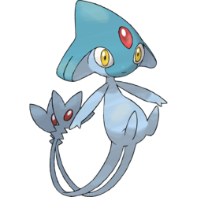 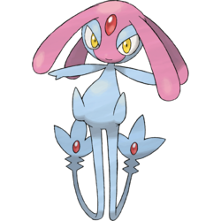 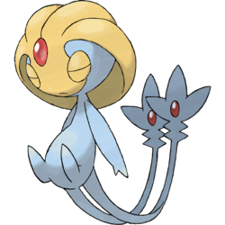 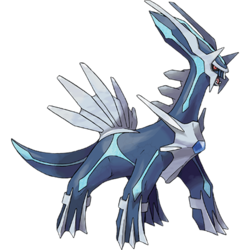 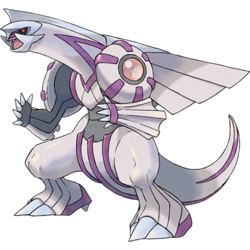 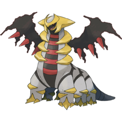 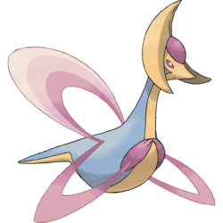 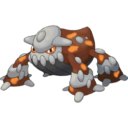 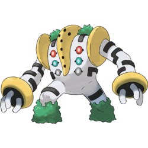 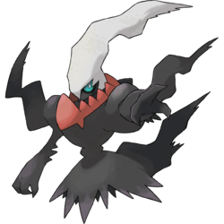 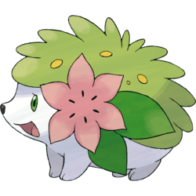 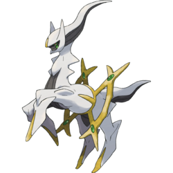